Introduction à la cartographie - Séance 2
Représenter les données quantitatives relatives
Cartographie thématique avec Magrit
2025-11-26
Discrétiser
La discrétisation est un mode de simplification de l’information (quantitative continue) pour la rendre intelligible.
Deux objectifs
Regrouper les valeurs qui se ressemblent et qui sont différentes des autres ; donner des seuils qui ont du sens
Conserver l’ordre de grandeur, la dispersion, la forme de la distribution
Rendre compte de la structure interne du jeu de données
Limiter le nombre de classes
\[N(cl) = 1 + 3,3 \log10(N)\]
où \(N\) est le nombre d’observations et \(N(cl)\) le nombre de classes
Faciliter la mémorisation
On a coutume de dire que 10 classes est un maximum.
Construire une carte qui “raconte” quelque-chose
Quelques principes fondamentaux
Les classes ne doivent pas être vides
Les classes doivent couvrir l’ensemble de la distribution, et être contiguës (elles s’arrêtent là où une autre commence)
Les classes doivent être distinctes (les valeurs ne doivent pas se superposer)
Les caractéristiques essentielles de la distribution de l’indicateur doivent être conservées, et permettre de perdre le moins d’information possible.
Le nombre de classes doit être inférieur au nombre d’observations
Quel résultat sans discrétisation ?
Les méthodes de discrétisation
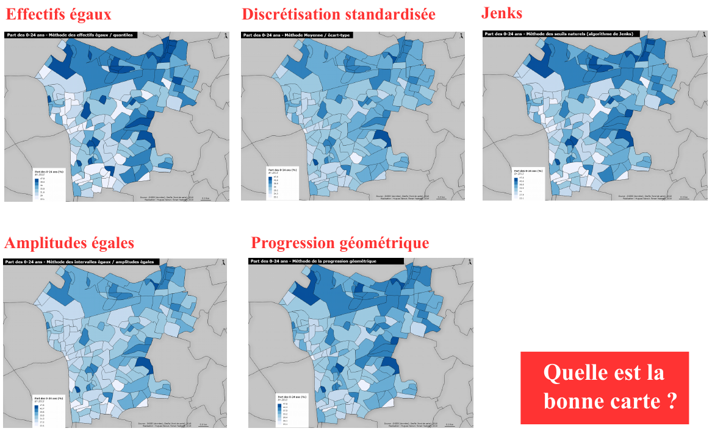
Les caractéristiques statistiques à prendre en compte pour la discrétisation
Le résumé statistique : valeurs centrales (moyenne / médiane), le minimum, le maximum
Les paramètres de dispersion : l’écart-type (calcul intégrant les valeurs algébriques d’écart à la moyenne)
La forme de la distribution des données : l’observation des concentrations d’individus
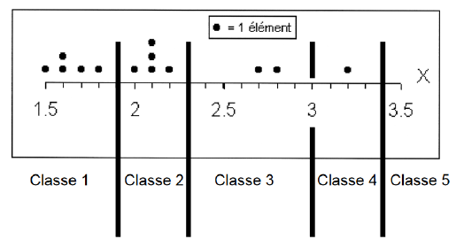
Discrétisation = Découpage en classes selon ces spécificités
Les méthodes
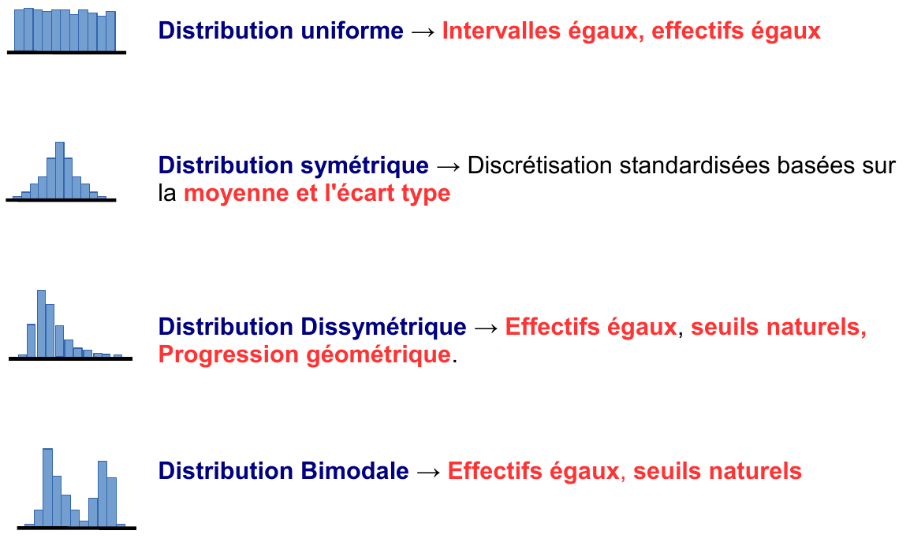
La méthode de Jenks est la méthode passe-partout !
1. Les effectifs égaux
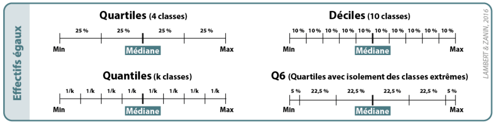
Une méthode adaptée pour comparer les cartes entre elles :
Cependant, peu adaptée pour mettre en évidence des valeurs exceptionnelles.
La méthode Q6 est une variante qui consiste à isoler les bornes extrêmes de la distribution.
Méthode 1
Effectifs égaux / quantiles
2. Amplitude égale
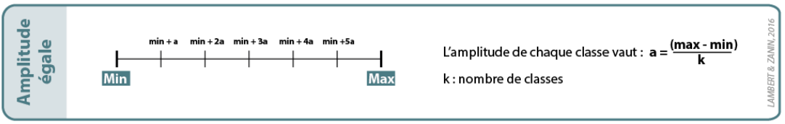
Une méthode adaptée pour des distributions uniformes ou symétriques : elle produit généralement des seuils de classe simples et compréhensibles.
Méthode 2
Intervalles égaux / Amplitudes égales
3. Moyenne et écart-type
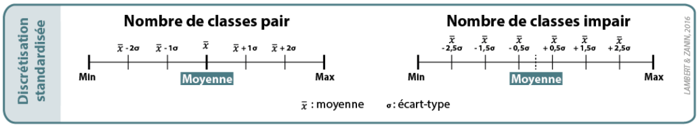
Une méthode idéale pour les distributions symétriques (normales, gaussiennes).
Aussi appelée discrétisation standardisée.
Cette méthode met en évidence les valeurs exceptionnelles de la distribution.
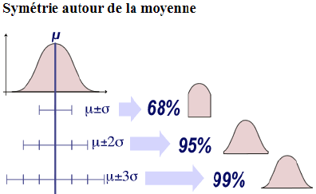
Méthode 3
Moyenne et écart-type
4. Seuils naturels
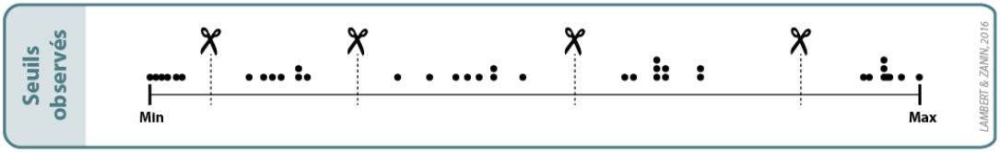
Une méthode adaptée lorsque des seuils naturels apparaissent dans la distribution. Assez subjective, elle nécessite une bonne connaissance des phénomènes étudiés.
La méthode dite de Jenks automatise ce procédé manuel. Elle repose sur un algorithme qui minimise la variance intra-classes en maximisant la variance inter-classes.
C’est une méthode passe-partout, mais elle ne permet pas de comparer les cartes entre elles !
5. Progression géométrique
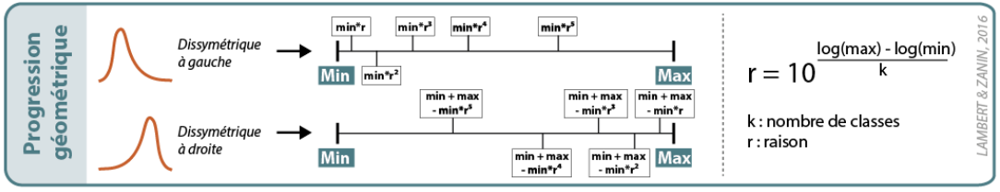
Une méthode adaptée pour des distributions très dissymétriques. Elle consiste à construire des classes dont l’étendue augmente (ou diminue) de plus en plus.
Il faut en définir la raison (coefficient multiplicateur) ; le minimum ne doit pas être égal à zéro.
Méthode 5
Progression géométrique
2. Les variables visuelles
Représenter les données quantitatives relatives
Retranscrire l’ordre sans la proportionnalité :
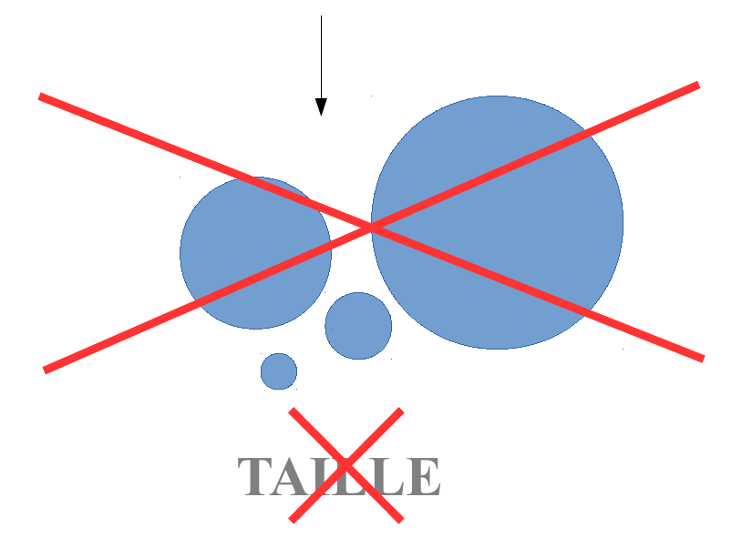
Représenter les données quantitatives relatives
Retranscrire l’ordre sans la proportionnalité :
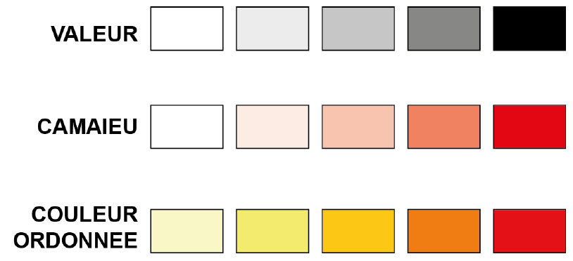
Valeur
Rapport entre une quantité de noir et de blanc perçue sur une surface donnée. Il s’agit donc d’une gradation en niveaux de gris s’échelonnant du gris clair au noir, le blanc étant souvent réservé pour l’absence d’information.
Camaïeu
Ce procédé est également applicable au cas d’une couleur foncée progressivement par un gain en intensité. On parle alors d’un camaïeu, qui constitue en fait le résultat de l’association des variables visuelles de valeur et de couleur.
Couleur ordonnée
On utilise ici les propriétés du spectre visible de la lumière en en faisant varier, en plus de son intensité, la longueur d’onde de la couleur choisie. Cette longueur d’onde (du froid vers le chaud ou l’inverse) constitue elle aussi une variable visuelle ordonnée et continue. On parle aussi de gradation harmonique.
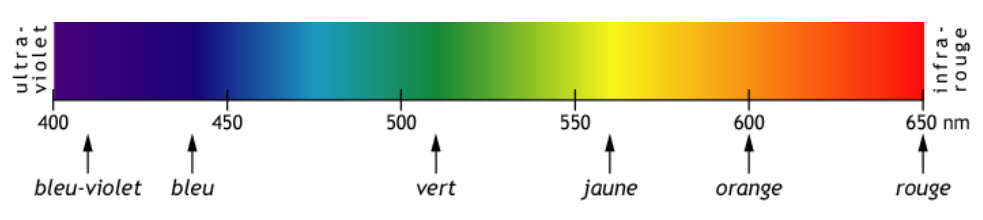
Le choix des couleurs :
Perception des couleurs selon l’usage
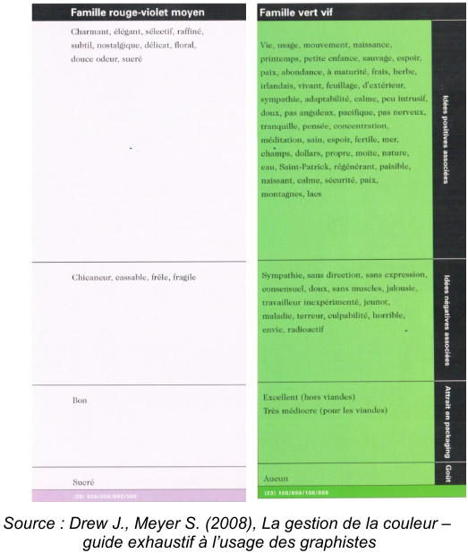
Perception “culturelle” (?) des couleurs
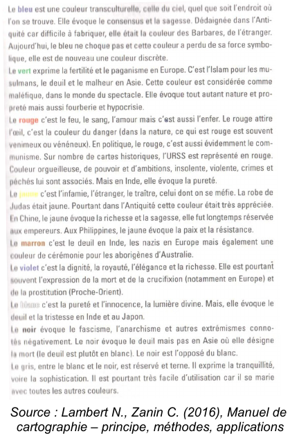
D’autres variables visuelles plus désuettes
Elles sont un peu “passées de mode”, mais elles avaient l’avantage de bien se prêter à la superposition d’éléments.
3. Cartographie thématique avec Magrit
Représenter les données quantitatives de taux
Objectif :
Représenter la part des 0-24 ans dans les IRIS d’Est Ensemble (public cible des médiathèques)
NB : adaptez cet exemple à votre espace d’étude et à votre problématique !
Les étapes :
Préparation des données et géométries
Import des géométries et des données, jointure et typage des données
Réalisation d’une carte de ratios et analyse des données
Discrétisation et choix des couleurs
Mise en page
Sauvegarde / Export
1. Préparation des données et géométries
Utilisez QGis et un tableur.
Quel indicateur choisir ?
D’où vient l’information ?
Quelle est la date de production de l’indicateur ?
Les codes sont-ils les mêmes que dans le fichier de géométrie ?
2. Import, jointure et typage des données

Vous pouvez charger le fichier projet réalisé lors de la séance précédente (carte de stock). Cela permet :
Dans ce cas, il faut veiller à :
ne pas modifier a posteriori la carte précédente (vous perdriez l’harmonie graphique) : police, couleur et épaisseur des bordures…
réorganiser vos couches géographiques pour ne garder que ce dont vous avez besoin (panneaux import des données et gestion des couches)
Optionnel : import du fichier projet de la dernière fois
Import des données et jointure avec le fond de carte
Import des données et jointure avec le fond de carte
Sélection du champ de jointure
3. Réalisation de la carte et analyse des données

3. Réalisation de la carte et analyse des données
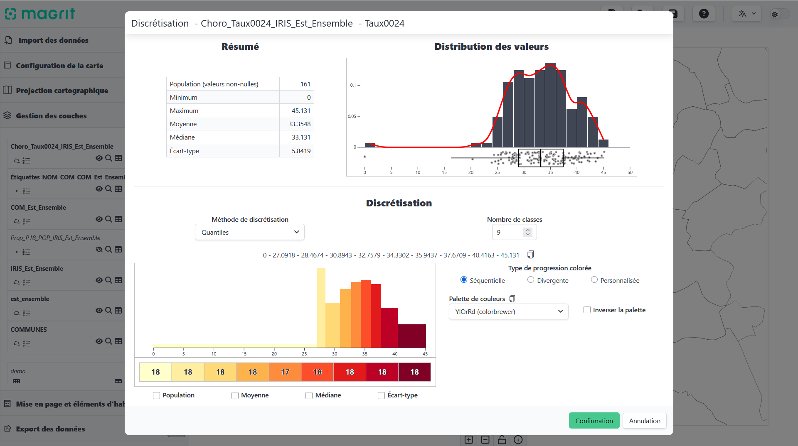
4. Discrétisation & choix des couleurs
Quelle forme de distribution ?
Quel est le message que l’on souhaite transmettre ?
Quel nombre de classes, quelles couleurs ?
C’est le moment de justifier vos choix !
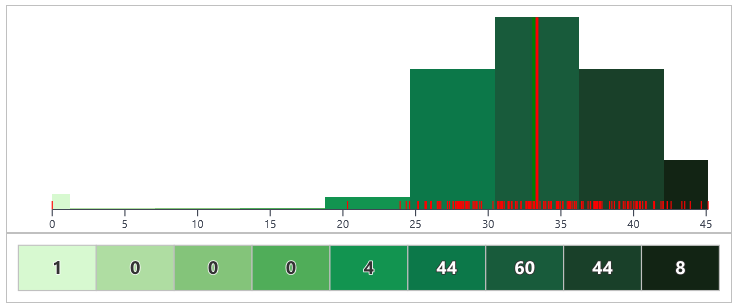
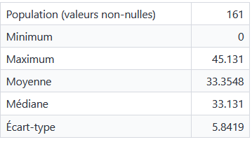
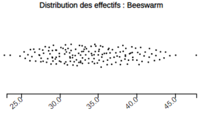
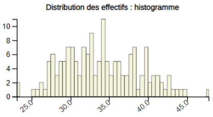
Quelle forme de distribution ?
Plutôt symétrique (médiane = moyenne) : “Moyenne / Écart-type”, avec valeur extrême : Q6
Quel est le message que l’on souhaite transmettre ?
-> Visualiser les IRIS dont la population jeune est au-dessus ou en-dessous de la moyenne.
Quel nombre de classes ? Quelles couleurs ?